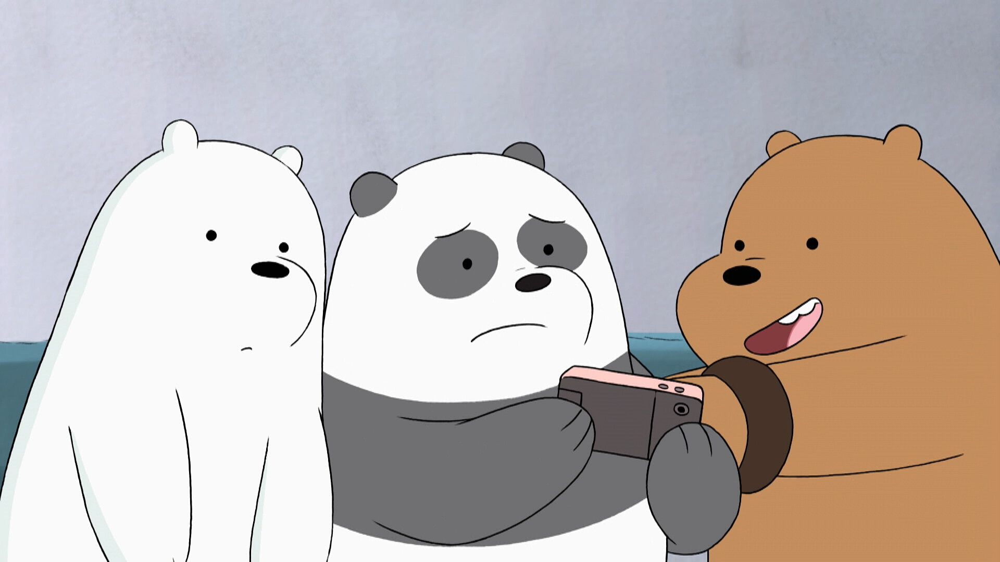
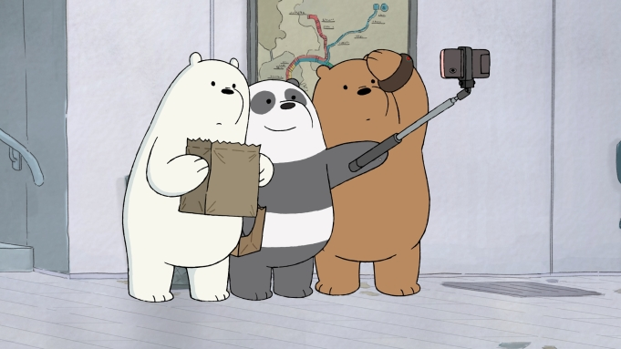

My Photos



הסדרה עוקבת אחר שלושה דובים אחים מאומצים – גריזלי ("גריז"), פנדה ודוב קוטב – המגיעים לסן פרנסיסקו ומנסים להסתגל לעולם בני האדם, כשהם מנסים לקנות אוכל, כדי להתחבר לבני האדם או כדי להיות מפורסמים באינטרנט, אף על פי שבאמצעות ניסיונות אלו רואים את הדובים מנסים להשתייך לטבע של בני האדם באמצעות האינסטינקטים של החיות. אולם, לבסוף, הם מבינים שצריך לתמוך זה בזה. הדובים משתמשים לפעמים כ"עמוד דובים", שם הם הולכים בכל העיר. העמוד שלהם הופך להיות הסימן המוכר בסדרה. הדובים חווים הרפתקאות עם חבריהם בפארק כגון: ילדת הפלא קלואי פארק, הביגפוט צ'רלי , הקואלה נום-נום סנסציית האינטרנט , שומרת היערות טייבס ואשת המכירות לוסי.
|
|
|---|
| Web 1.0 | Web 2.0 | Web 3.0 |
|---|---|---|
| קריאה בלבד | קריאה-כתיבה | אינטרקצית קריאת כתיבה |
| מידע פרטי של האתר | ניתן לחלוק מידע | חלוקת מידע מגובשת |
| דף אינטרנט פשוט | שימוש קצה בשירותים באינטרנט | מרחבי מידע נרחבים וניגשים למשתמשים |